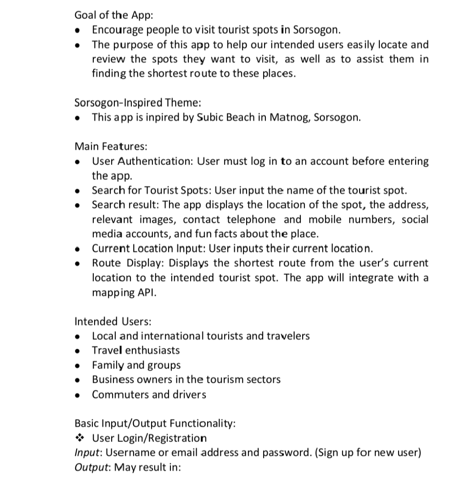
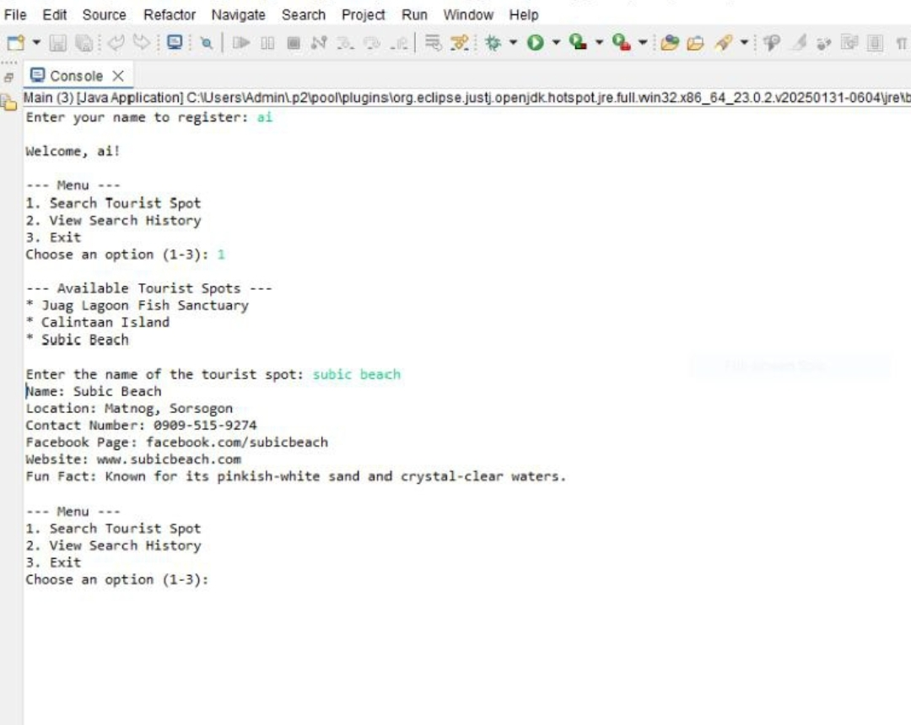
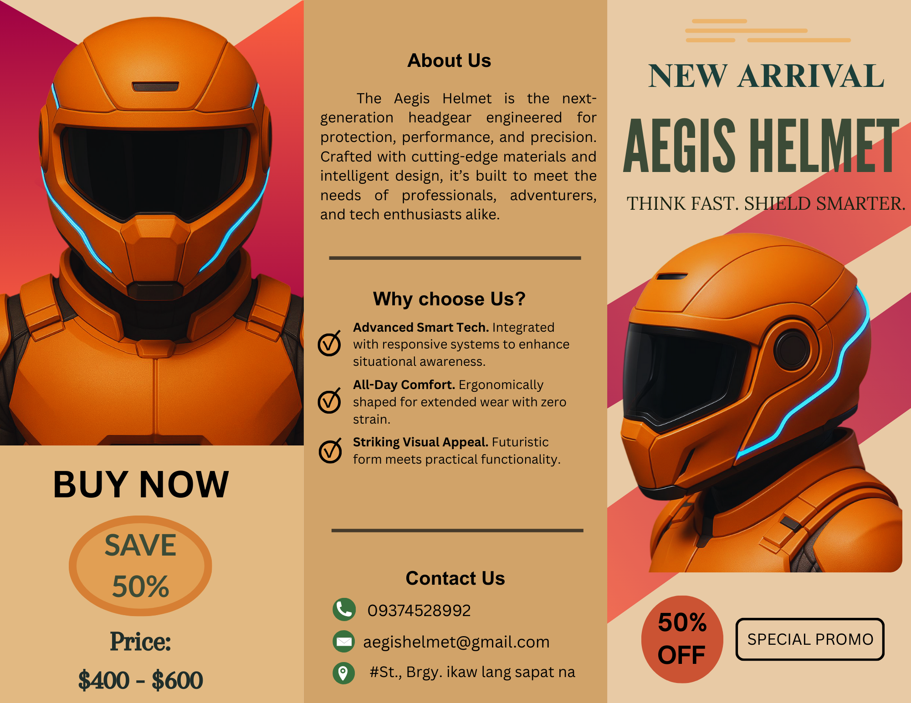
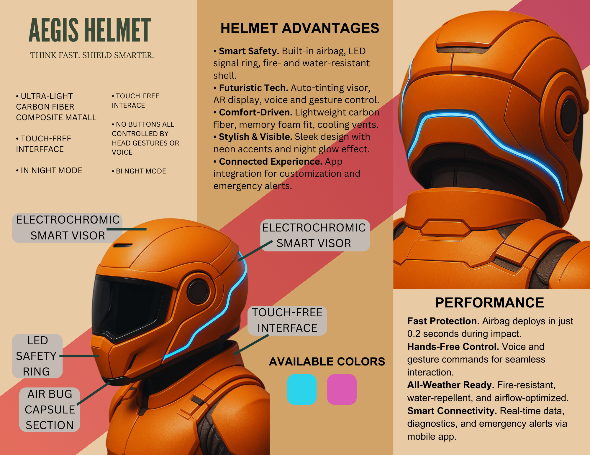

Age: 20 years old
Location: Aquino, Bulan, Sorsogon, Philippines
Course: Bachelor of Science in Information Technology (BSIT 2-2)
Short Personal Intro
Hi, my name is Shan Mark L. Gustuir, a second-year BSIT student at Sorsogon State University – Bulan Campus. I am passionate about learning technology and continuously improving my skills step by step. I believe that consistency, discipline, and courage are the keys to achieving my goals in life.
Fun Fact: I love sunsets and coffee because they give me peace and creative ideas.
Quote: “Small progress is still progress.”
I am known for being cheerful and full of humor. I enjoy making the people around me smile and spreading positive energy wherever I go.
My goal is to succeed in the IT field and continue developing my technical skills. I dream of becoming a social media videographer and owning a coffee shop someday.
Project Title: Sorsogon Explorer
Description:
Sorsogon Explorer is a Java-based application that promotes tourism in Sorsogon by helping travelers find and learn about local destinations. Users can search for places like Subic Beach in Matnog and view complete details such as location, contact information, social media links, and fun facts. The app includes mapping features that allow users to enter their current location and receive the shortest optimized route, along with estimated travel time and distance. It also provides secure user authentication, including registration, login, and password recovery.
Tools Used:
Preview Images:


Project Title: Aegis Helmet
Description:
A promotional brochure showcasing the Aegis Helmet, a next-generation smart safety headgear engineered for protection, comfort, and high-tech performance. The brochure highlights product features such as smart technology, all-day comfort, futuristic design, and advanced safety systems. It includes details like helmet advantages, performance features, available colors, pricing, contact information, and promotional offers.
Tools Used:
Preview Images:

